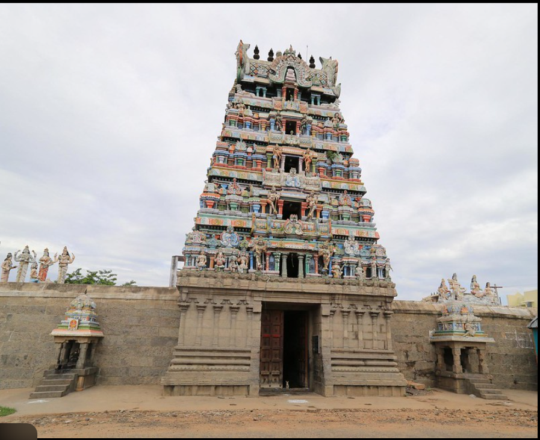

PERAMBALUR CITY(25017123)
PANCHANATHEESWARAR TEMPLE
The Panchanatheeswarar Temple is a sacred Hindu temple
dedicated to Lord Shiva, located in Kurumbalur,
Perambalur district of Tamil Nadu. This temple is an
old one, known for its architectural beauty and
spiritual atmosphere.For me, this temple is more
than just a holy place. It’s like a bridge to the
past you can feel the history in the stones and
the carvings. Visiting Panchanatheeswarar Temple
makes me calm and reflective. The way sunlight falls
through the entrance, the peaceful atmosphere, all
help one connect with something bigger than
day-to-day life.
